五子棋古书图
#1 五子棋古书图作者：有志青年 发表时间：2007-3-16 22:09:10
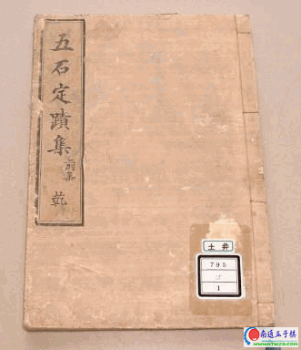
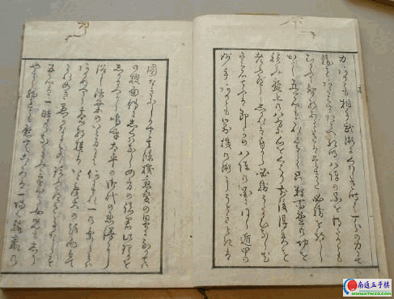
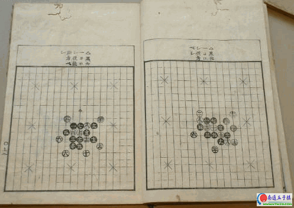
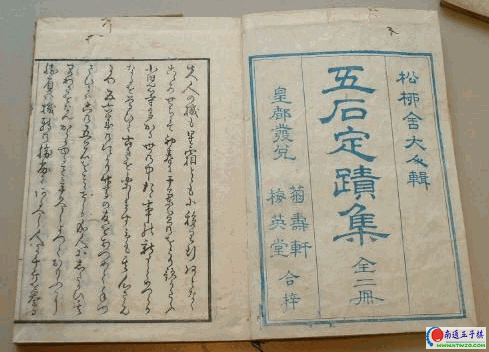
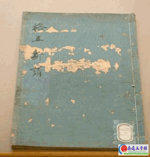
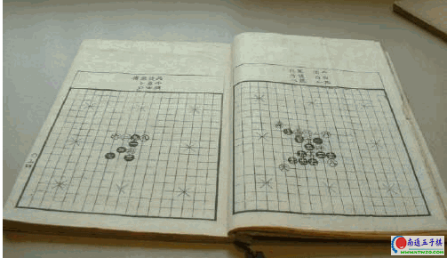
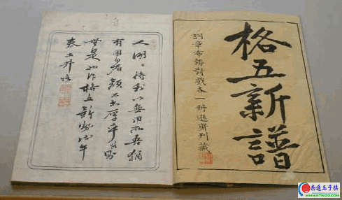
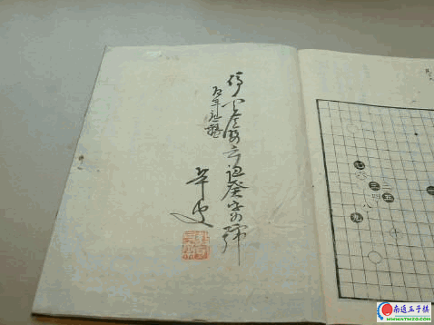
我国第一本现代五子棋的书籍＜五子棋制胜妙谱＞一书，此书写于1986年,1990年由上海文化出版社正式出版，。此书第一次将禁手的概念全面准确地介绍给我们中国人，同时详细解说了如何先手必胜。尽管此书现在看来有一些技术错误，但对当初的五子棋爱好者来说，看了此书后会由衷感叹这才叫五子棋，从而产生老子天下无敌的气势。后来此书进行了修订重版，并增加了这一章，读者可以根据自己的成绩来测定自己的棋力,并更名为<五子棋绝招>。
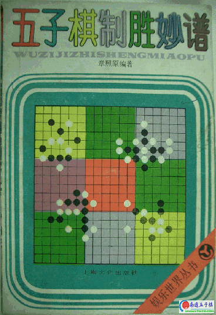
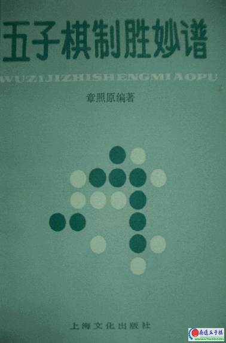
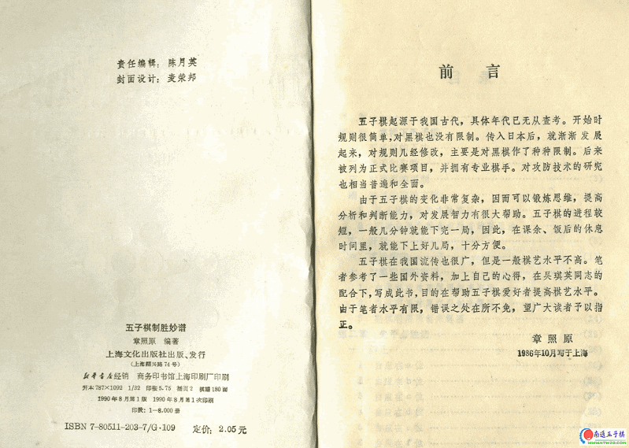
#2 Re:五子棋古书图作者：许相公 发表时间：2007-3-17 17:41:52
大家是不是也用19路盘下五子棋，我已经这样下了好几年了
#3 Re:五子棋古书图作者：yidefei 发表时间：2007-3-19 17:12:27
五子棋制胜妙谱在手中矣！
#4 Re:五子棋古书图作者：青发伊凌寺 发表时间：2007-5-10 23:19:32
了解点儿历史也好.#5 Re:五子棋古书图作者：先期 发表时间：2008-7-8 12:02:20
名字不错，但看不到图，不知真面目是什么样啊！［ 有志青年 于 2008-7-8 12:15:43 时奖励此帖[金币加 20 威望加1］
#6 Re:五子棋古书图作者：oddgod 发表时间：2008-7-8 21:48:28
呵呵，第一幅图是《五珠定石》吗？#7 Re:五子棋古书图作者：孤傲 发表时间：2008-7-10 9:40:38
那上面的字写的好飘逸啊~~我竟然一个也不认识~~
#8 Re:五子棋古书图作者：五子天下 发表时间：2008-7-11 14:44:12
五子棋的起步还是比较晚啊。。。。。
#9 Re:五子棋古书图作者：笑雨辰 发表时间：2008-8-11 6:00:27
最上面几张图上的不是汉字吧#10 Re:五子棋古书图作者：yidefei 发表时间：2008-8-12 0:01:49
记得曾下过这些书，可惜没有下全！
作为文档收藏是可以，但要去阅读的话确实是很累的，呵呵
#11 Re:五子棋古书图作者：自来自去 发表时间：2008-8-12 8:48:44
长见识了，呵呵，我都没像样的书籍，得赶紧充电了！#12 Re:五子棋古书图作者：我爱五子棋伯园 发表时间：2008-10-15 9:19:43
有妙谱的上来共享一下
#13 Re:五子棋古书图作者：越狱行辕 发表时间：2008-11-7 0:41:51
这张谱真怪 看来古代时候就有比较先进的规则了吧#14 Re:五子棋古书图作者：暮雨迟 发表时间：2008-11-7 4:17:01
前面几本看着像手写版的,太强了,可惜看不懂
#15 Re:五子棋古书图作者：星月族 发表时间：2010-1-5 11:54:10
具体是什么年代的?